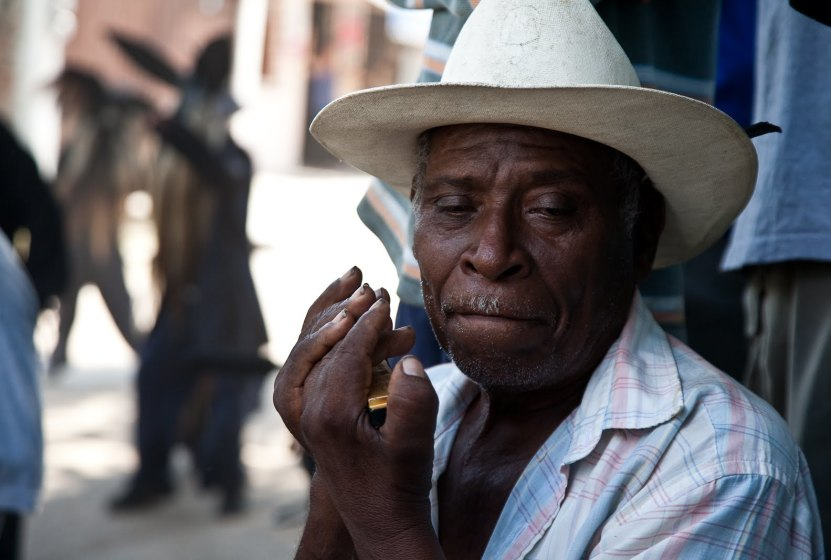
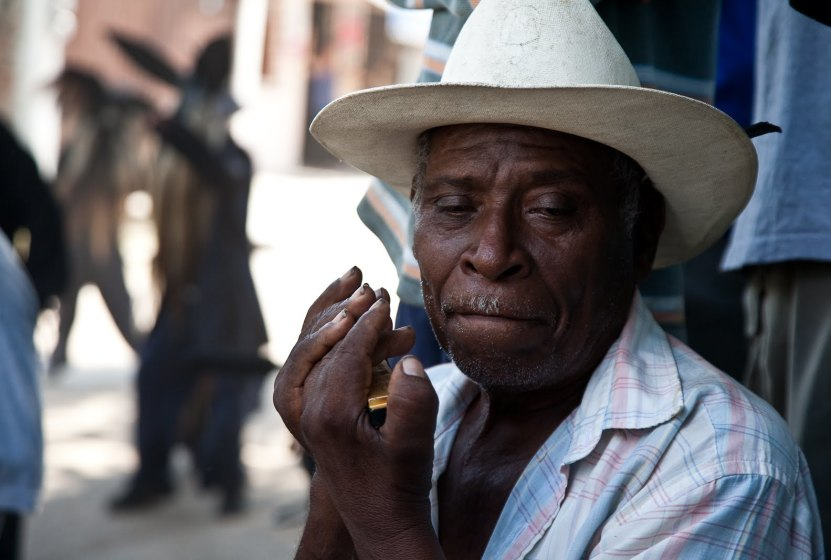
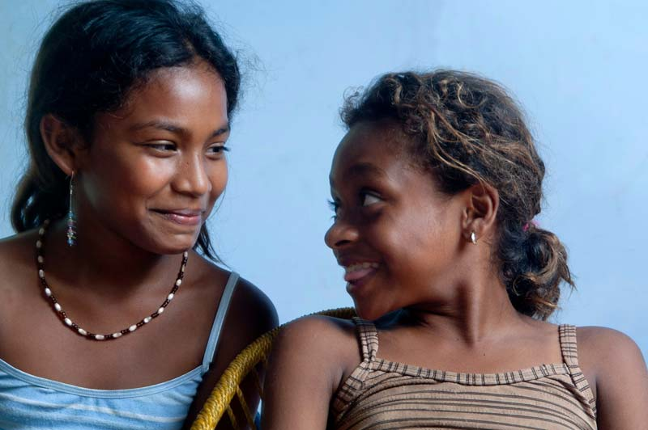
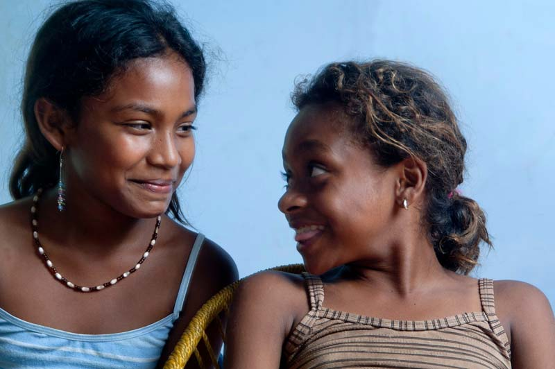
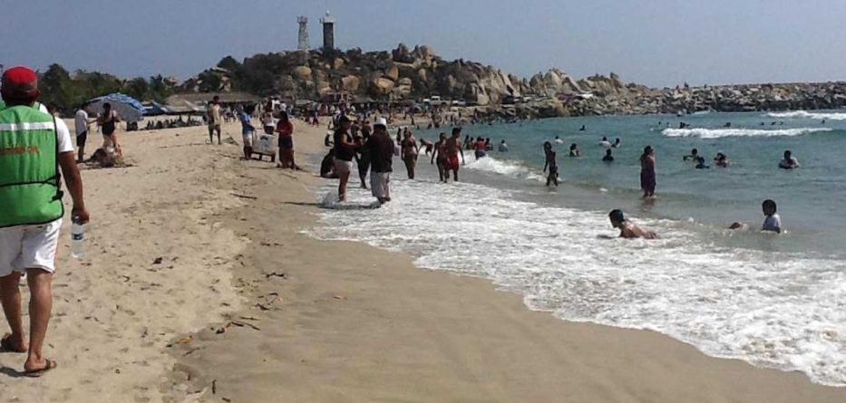
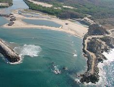
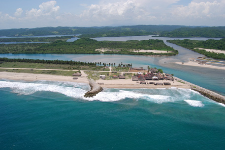
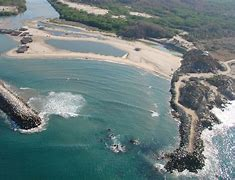
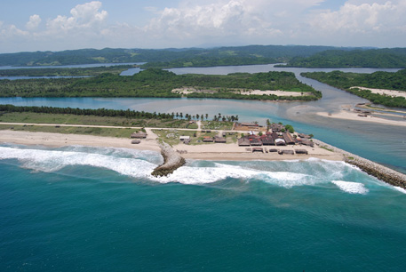

La localidad de Corralero está situado en el Municipio de Santiago Pinotepa Nacional (en el Estado de Oaxaca). Hay 1735 habitantes. Dentro de todos los pueblos del municipio, ocupa el numero 6 en cuanto a numero de habitantes. Corralero esta a 20 metros de altitud.
Toda la informacion de este pueblo de 1735 habitantes del Estado de Oaxaca
La localidad de Corralero está situada en el Municipio de Santiago Pinotepa Nacional (en el Estado de Oaxaca). Hay 1735 habitantes. Dentro de todos los pueblos del municipio, ocupa el número 6 en cuanto a numero de habitantes. Corralero está a 20 metros de altitud.
El pueblo de Corralero está situado a 18.6 kilómetros de Santiago Pinotepa Nacional, que es la localidad más poblada del municipio, en dirección Noroeste.
La localización de corralero se localiza en el municipio santiago pinotepa nacional y se encuentra en las coordenadas GPS:
Longitud (Dec):-98.189167
Latitud (Dec): 16.236389
La localidad se encuentra a una mediana altura de 5 metros sobre el nivel del mar.
Población en Corralero
En la localidad hay 889 hombres y 846 mujeres. El ratio mujeres/hombres es de 0,952, y el índice de fecundidad es de 3.11 hijos por mujer. Del total de la población, el 14,81% proviene de fuera del Estado de Oaxaca. El 17,41% de la población es analfabeta (el 18,00% de los hombres y el 16,78% de las mujeres). El grado de escolaridad es del 5.03 (4.79 en hombres y 5.28 en mujeres).
 
Para visitar otro sitio dale click al siguiente link donde se habla mas a fondo sobre este tema:
Corralero

Para visitar otro sitio dale click al siguiente link donde se habla mas a fondo sobre este tema:
Corralero
Variaciones de población en Corralero desde 2005
En el año 2005, en Corralero había 1301 habitantes. Es decir, ahora hay 434 personas mas (una variación de 33,36%). De ellas, hay 254 hombres mas (una variación de 40,00%), y 180 mujeres más (una variación de 27,03%).
Cultura indigena en Corralero
El 9,11% de la población es indigena, y el 3,52% de los habitantes habla una lengua indígena. El 0,06% de la poblacion habla una lengua indigena y no habla español.
Desempleo y economía en Corralero
El 36,08% de la población mayor de 12 años esta ocupada laboralmente (el 55,12% de los hombres y el 16,08% de las mujeres).
 

Viviendas e infraestructuras en Corralero
En Corralero hay 438 viviendas. De ellas, el 93,54% cuentan con electricidad, el 0,26% tienen agua entubada, el 59,17% tiene excusado o sanitario, el 15,25% radio, el 79,84% televisión, el 55,30% refrigerador, el 17,05% lavadora, el 9,82% automóvil, el 1,03% una computadora personal, el 21,71% teléfono fijo, el 1,55% teléfono celular, y el 0,78% Internet.
Instituciones Educativas de la localidad Corralero
La localidad cuenta con instituciones educativas de prescolar, para lo niños menores y pequeños a 5 años, tambien cuenta con una escuela primaria "Enrique C. Resamen", que cuenta con los niveles de primer grado hasta a sexto grado de primaria y cuenta con dos salones por grados, despues de esta esta la escuela telesecundaria "Calmecac" quien cuenta con los niveles basicos de estudios hasta tercer año y tambien cuenta con dos salones por cada grado, es decir dos por años, y por ultimo se encuentra el medio superior "IEBO, Instituto de Estudios de Bachillerato del Estado de Oaxaca" Plantel 260 "Corralero" quien cuenta con la educacion de tres años y es de media supperior. son las instituciones educativas con las que cuenta la localidad.
Educacion Escolar en Corralero
Aparte de que hay 214 analfabetas de 15 y mas años, 36 de los jovenes entre 6 y 14 años no ha asistido a la escuela.de la poblacion a partir de los 15 años, 202 no tienen ninguna escolaridad, 413 tienen escolaridad incompleta. 91 tienen una escolaridad basica y 70 cuentan con una educacion post-básica.
Playa Corralero
Clima cálido subhúmedo con lluvias en verano. Temperatura media anual mayor de 26° C. Corralero es una playa localizada en la Costa Chica, territorio oaxaqueño. Es un auténtico paraíso para quienes habitan en el municipio de Pinotepa Nacional y lugares cercanos como Cuajinicuilapam, Putla de Guerrero, San Juan Cacahuatepec, Pinotepa de Don Luis y Jamiltepec, de entre varios otros en las entidades de Guerrero y Oaxaca.
De acuerdo a una antigua tradición en Corralero, en esta playa de la Costa Chica oaxaqueña, el día primero de enero numerosos turistas acudieron a esta hermosa playa, prácticamente virgen, pero perfecta para tomar baños de sol, practicar la natación y gozar del ecoturismo.
Por toda la extensión de esta vasta playa y en sus limpias aguas, se pueden observar bellas chicas en traje de baño y jóvenes practicando deportes acuáticos. Pero no solamente Corralero se colma de visitantes los fines de semana y días de descanso, sino todas las demás playas del litoral oaxaqueño. Corralero se ubica en una zona geográfica caracterizada por su excelente clima, con altas temperaturas y la siempre grata brisa marina. Los vacacionistas gustan de realizar en su vasta extensión arenosa muchas actividades recreativas, como el futbol y el voleibol de playa.

 No obstante, es precioso mencionar que Corralero es una playa a mar abierto, de intenso oleaje y pendientes muy acentuadas. Por lo anterior, para gozar al máximo de Playa Corralero la mejor recomendación es sumergirse en sus áreas más tranquilas, especialmente en las partes donde hay escolleras, donde aparecen diminutas playas, magníficas para quienes gustan de los suaves oleajes. Para quienes habitan por estos rumbos costeros del territorio oaxaqueño, el turismo es su fuente de recursos prioritaria. Algo que distingue a playa Corralero es que en esta zona costera se puede nadar desde su orilla hasta unos cien metros mar adentro, puesto que no tiene una excesiva profundidad. En la playa, para disfrute de los visitantes, hay varios restaurantes palaperos en donde se preparan diversos platillos típicos con pescado y mariscos.
No obstante, es precioso mencionar que Corralero es una playa a mar abierto, de intenso oleaje y pendientes muy acentuadas. Por lo anterior, para gozar al máximo de Playa Corralero la mejor recomendación es sumergirse en sus áreas más tranquilas, especialmente en las partes donde hay escolleras, donde aparecen diminutas playas, magníficas para quienes gustan de los suaves oleajes. Para quienes habitan por estos rumbos costeros del territorio oaxaqueño, el turismo es su fuente de recursos prioritaria. Algo que distingue a playa Corralero es que en esta zona costera se puede nadar desde su orilla hasta unos cien metros mar adentro, puesto que no tiene una excesiva profundidad. En la playa, para disfrute de los visitantes, hay varios restaurantes palaperos en donde se preparan diversos platillos típicos con pescado y mariscos.

 También es aconsejable tomar excursiones por los alrededores de la laguna en lanchas guiadas por los lugareños. En los rústicos restaurantes de la zona se sirven especialidades tan deliciosas como el pescado a la talla, los tacos de hormiga roja. Las tichindas en coloradito y muchas otras más igual de suculentas.


Para fines de alojamiento en Playa Corralero se alquilan algunas rústicas cabañas. Es uno de los lugares más atrayentes de las costas oaxaqueñas, en especial por la belleza de su ambiente silvestre, el gran potencial ecoturístico del lugar y la amabilidad de los lugareños.
También es aconsejable tomar excursiones por los alrededores de la laguna en lanchas guiadas por los lugareños. En los rústicos restaurantes de la zona se sirven especialidades tan deliciosas como el pescado a la talla, los tacos de hormiga roja. Las tichindas en coloradito y muchas otras más igual de suculentas.


Para fines de alojamiento en Playa Corralero se alquilan algunas rústicas cabañas. Es uno de los lugares más atrayentes de las costas oaxaqueñas, en especial por la belleza de su ambiente silvestre, el gran potencial ecoturístico del lugar y la amabilidad de los lugareños.